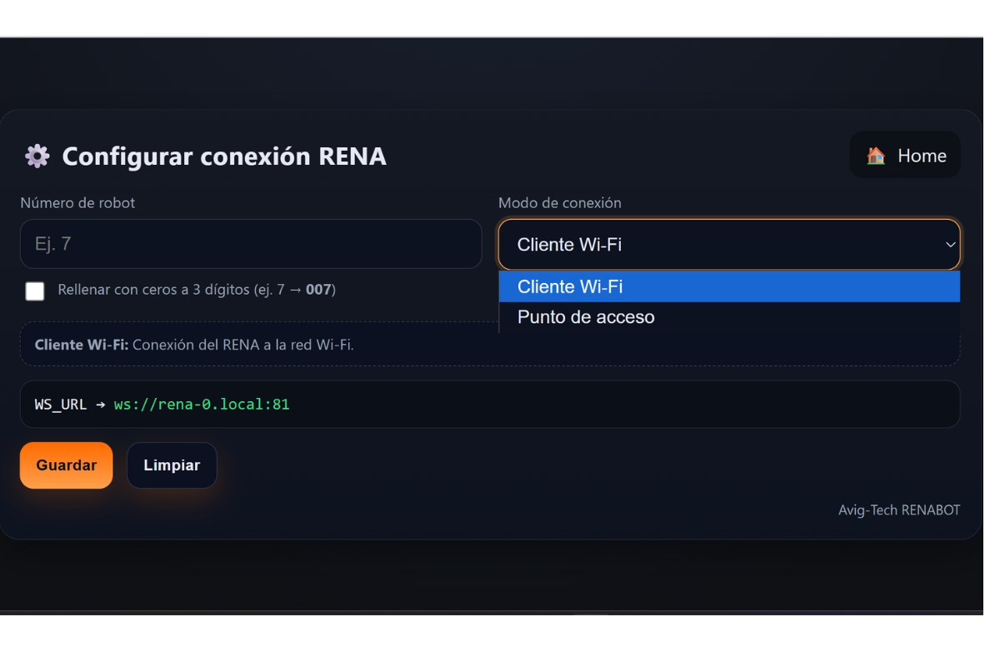

Configuracióndel RENA-BOT
Conexión con el dispositivo
Una vez realizada la construcción del cualquier modelo del RenaBot, el primer paso para usar el RENA-BOT es establecer una conexión wifi.
Para la conexión con el RENA-BOT se puede utilizar 2 modos:
Modo cliente:
En el modo cliente el rena se conecta a la red wifi disponible.
Revise las redes diponibles
Ingrese al portal general por el Rena-XX.
Ingrese las credencias de la Red Wifi a la que quieres acceder.
Espere a que la conexión se haya realizado.
Modo Acces Point:
Revise las redes diponibles
Ingrese al portal general por el Rena-XX.
Conectate a la red Wifi generada por el RENA-BOT.
Ingresa la contraseña rena1234.
Cada RENA-BOT tiene un número de identificación único.

Una vez realizada la conexión ya puedes utilizar tu RENA-BOT
Selección de aplicación
Seguidor en Malla
Para esta modalidad necesitas la malla para el seguidor de linea.
Este modo se presenta como una implementación diseñada para maximizar la precisión de los movimientos del RENA-BOT, siendo especialmente útil en actividades educativas que priorizan:
El desarrollo del pensamiento lógico-matemático básico, a través de tareas como contar, reconocer figuras y patrones, clasificar y comparar.
El aprendizaje experiencial y lúdico, mediante actividades de exploración, prácticas guiadas y juegos interactivos.
Además, este modelo toma como referencia un toy problem relacionado con el almacenamiento inteligente y la optimización de rutas utilizando robots móviles. Su aplicación más directa se observa en los robots industriales seguidores de línea utilizados por Amazon, que ejemplifican cómo un concepto didáctico puede escalar hacia soluciones de ingeniería avanzada en logística y automatización.
Para su uso puedes utilizar los bloques de seguidor y la opcion de control por voz utilizando el modo seguidor
Versiones que soportan esta aplicacion: velocista, transportador, todoterreno
Modo Músico
Este modo utiliza el buzzer pasivo y el piano virtual diseñado en la aplicación para que el RENA-BOT pueda interpretar melodías. El usuario selecciona notas musicales desde el piano virtual o mediante bloques de programación, y el robot las reproduce generando distintos tonos a través del buzzer.
De esta manera, los estudiantes no solo aprenden sobre programación y electrónica, sino que también se introducen a conceptos de frecuencia, ondas sonoras y PWM (modulación por ancho de pulso) de una forma divertida y creativa. Además, este modo fomenta la creatividad artística y tecnológica, permitiendo integrar actividades de música en la robótica educativa.
Modo radar
En esta configuración, el RENA-BOT emplea el sensor ultrasónico montado en un servomotor para realizar un barrido de hasta 270°, generando un mapa básico de los objetos que lo rodean. Paralelamente, el usuario puede manipular el movimiento del robot de forma manual mediante un joystick virtual, lo que combina exploración autónoma con control interactivo.
Modo Libre
En el modolo libre usando un joystick se puede manipular el movimiento del robot, además, se
puede visualizar los datos obtenidos por los sensores ultrasónico, LDR, LM35dz y manipular
el servomotor si el modelo armado es el manipulador.